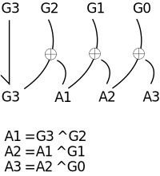

Number System
The Decimal Number System
- characteristics
- Ten symbols
- 0 1 2 3 4 5 6 7 8 9
- Ten symbols
- Most people use the decimal number system
Binary Number System
- characteristics
- Two symbols
- 0 1
- Two symbols
- Most digital computers use the binary number system.
- Terminology
- Bit → a binary digit
- Byte → (typically) 8 bits
Decimal-Binary Equivalence
- Decimal → Binary
- 0 → 0
- 1 → 1
- 2 → 10
- 3 → 11
- 4 → 100
- 5 → 101
- 6 → 110
- 7 → 111
- 8 → 1000
- 9 → 1001
The Octal Number System
- characteristics
- Eight symbols
- 0 1 2 3 4 5 6 7
- Positional
- (1743)8 ≠ (7314)8
- Eight symbols
Decimal-Octal Equivalence
- Decimal → Octal
- 0 → 0
- 1 → 1
- 2 → 2
- 3 → 3
- 4 → 4
- 5 → 5
- 6 → 6
- 7 → 7
- 8 → 10
- 9 → 11
- 10 → 12
- 11 → 13
- 12 → 14
- 13 → 15
- 14 → 16
- 15 → 17
The Hexadecimal Number System
- characteristics
- Sixteen symbols
- 0 1 2 3 4 5 6 7 8 9 A B C D E F
- Sixteen symbols
Decimal-Hexadecimal Equivalence
- Decimal → Hex
- 0 → 0
- 1 → 1
- 2 → 2
- 3 → 3
- 4 → 4
- 5 → 5
- 6 → 6
- 7 → 7
- 8 → 8
- 9 → 9
- 10 → A
- 11 → B
- 12 → C
- 13 → D
- 14 → E
- 15 → F
Conversions from one number systemt to other

Binary Coded Decimal numbers
- Another number system that is encountered occasionally is BinaryCoded Decimal.
- In this system, numbers are represented in a decimal form, however each decimal digit is encoded using a four bit binary number.
- For example → The decimal number 136 would be represented in BCD as follows
136 = 0001 0011 0110 1 3 6 - Conversion of numbers between decimal and BCD is quite simple.
- To convert from decimal to BCD, simply write down the four bit binary pattern for each decimal digit.
- To convert from BCD to decimal, divide the number into groups of 4 bits and convert to decimal.
- The use of BCD to represent numbers isn't as common as binary in most computer system, as it is not as space efficient.
Signed and Unsigned Numbers
- So far, we have only considered positive values for binary numbers.
- When a fixed precision binary number is used to hold only positive values, it is said to be
unsigned.
- In this case, the range of positive values that can be represented is 0 -- 2n-1, where n is the number of bits used.
- It is also possible to represent signed (negative as well as positive) numbers in binary.
- In this case, part of the total range of values is used to represent positive values, and the rest of the range is used to represent negative values.
- There are several ways that signed numbers can be represented in binary, but the most common representation used today is called two's complement.
- The term two's complement is somewhat ambiguous, in that it is used in two different ways.
- First, as a representation, two's complement is a way of interpreting and assigning meaning to a bit pattern contained in a fixed precision binary quantity.
- Second, the term two's complement is also used to refer to an operation that can be performed on the bits of a binary quantity.
- As an operation, the two's complement of a number is formed by inverting all of the bits and adding 1.
- In a binary number being interpreted using the two's complement representation, the high order bit of the number indicates the sign.
- If the sign bit is 0, the number is positive, and if the sign bit is 1, the number is negative.
- For positive numbers, the rest of the bits hold the true magnitude of the number.
- For negative numbers, the lower order bits hold the complement (or bitwise inverse) of the magnitude of the number.
- It is important to note that two’s complement representation can only be applied to fixed precision quantities, that is, quantities where there are a set number of bits.
- Two's complement representation is used because it reduces the complexity of the hardware in the arithmetic-logc unit of a computer's CPU.
- Using a two's complement representation, all of the arithmetic operations can be performed by the same hardware whether the numbers are considered to be unsigned or signed.
- The bit operations performed are identical, the difference depending on whether the value is considered to be unsigned or signed.
- For example: Find the 2's complement of the following 8 bit number
00101001 11010110 First, invert the bits +00000001 Then, add 1 = 11010111 The 2’s complement of 00101001 is 11010111 - Another example: Find the 2’s complement of the following 8 bit number
10110101 01001010 Invert the bits + 00000001 then add 1 = 01001011 The 2’s complement of 10110101 is 01001011
Gray Code
- Definition
- Gray Code is the minimum-change code category of coding in which, the two consecutive values changes by only a single bit.
- More specifically we can say, it is a binary number system where while moving from one step to the next, only a single bit shows variation.
- The coding technique was invented by Frank Gray, thus it is named so.
- It is also termed as reflected binary code or cyclic code. It is an unweighted code, as here like other number systems, no particular weight is provided to various bit position.
- Basically, binary code is changed to gray equivalent in order to lessen the switching operations.
- As only a single bit is changed at a particular time duration this leads to a reduction in switching from one bit to another.
Binary to Gray code conversion lecutre
XOR table

- copy the most significant bit as it is
- ( b4 b3 b2 b1 b0 )2 = b4 ( b4 ^ b3) ( b3 ^ b2 ) ( b2 ^ b1 ) ( b1 ^ b0 )
Example 1
1 0 1 1 = 1 ( 1 ^ 0 ) ( 0 ^ 1 ) ( 1 ^ 1 )
= 1 1 1 0
(1011)2 = (1110)gray
Example 2
11001 = 1 ( 1 ^ 1 ) ( 1 ^ 0 ) ( 0 ^ 0 ) ( 0 ^ 1)
= 10101
Gray code to binary
Example 1
10101 = 11001